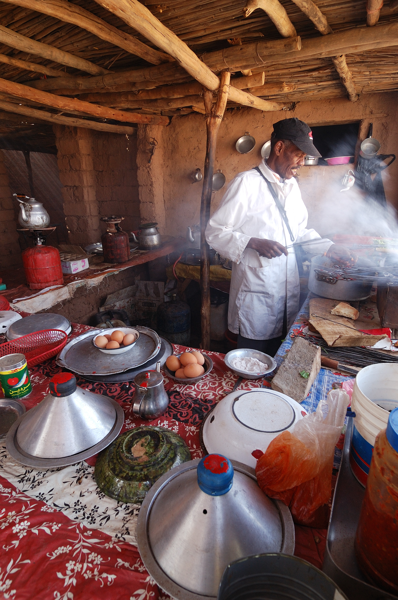

Vishu's Favourite Hobby
My name is Vishvashini,and my favourite hobby is cooking.
Cooking is the one most favourite thing which can change our mind and make our total consciusness with cook and taste I have always loved being in the kitchen, experimenting with different ingredients and techniques to create delicious and satisfying meals. I find cooking to be therapeutic and relaxing, and it brings me a great sense of fulfillment and enjoyment.
If you want to learn about the value of cooking,check out its
wikipedia page.

Specials about cooking...
- When you prepare your own meals, you have more control over the ingredients.
- By cooking for yourself, you can ensure that you and your family eat fresh, wholesome meals.
- This can help you to look and feel healthier, boost your energy, stabilize your weight and mood, and improve your sleep and resilience to stress.
Cooking a good habit...
- Cooking at home is an impressive healthy habit that puts you in the driver's seat of your nutrition
- In fact, research finds that meals cooked at home tend to be lower in salt, fat and calories.
- People who cook more at home are also more likely to consume more fruits, vegetables, whole grains and fish.